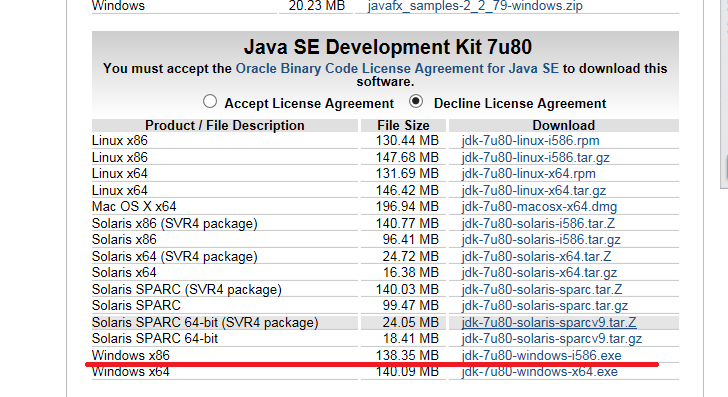
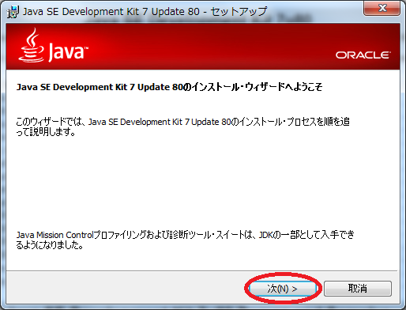

自分のPCのビット数を確認し、ビット数にあったものをダウンロード→実行してください。
（32bit:Windows x86,64bit:Windows x64）
↓

そのまま「次」を押して下さい。
↓

そのまま「次」を押して下さい。
↓

そのまま「次」を押して下さい。
↓

インストールが完了したので「閉じる」を押して下さい。
☆JDKとJREの違いについて☆
インストール後、C:\Program Files\Javaの中には「jdk・・」と、「jre・・」と２つのフォルダが作成されますが、
JDKはJava Development Kitの略で、JREはJava Runtime Environmentの略です。
JDKはコンパイラ、JREはJava のプログラムを実行するためのJVMです。
JVMとはJava Virtual Machineの略で、Java プログラムを実行するための仮想マシンの事。
簡単に説明すると、JVMを入れれば、どんなPC環境下でもJava プログラムを動かすことができます。
２. 環境変数の設定
-
「コントロールパネル」→「システムとセキュリティ」→「システム」→「システムの詳細設定」→「環境変数」と選択して、
システム環境変数に下記のものを追加していきます。
PATH・・C:\Program Files\Java\jdk1.7.0_80\bin(変数値の最後にセミコロンを打って追加する。"・・・;C:\Program Files\Java\jdk1.7.0_80\bin")
元から入ってる変数値は消さないように注意！

設定後パソコンを再起動してください。
(再起動しないとpathの変更が更新されません。)
３．Javaの起動確認
-
設定は一通り終了したので実際動かして確認してください。
下図のような、Javaのサンプルを作成、保存して実行してみます。

コマンドプロンプトを立ち上げ、コンパイルして実行して、
実行できることを確認してください。